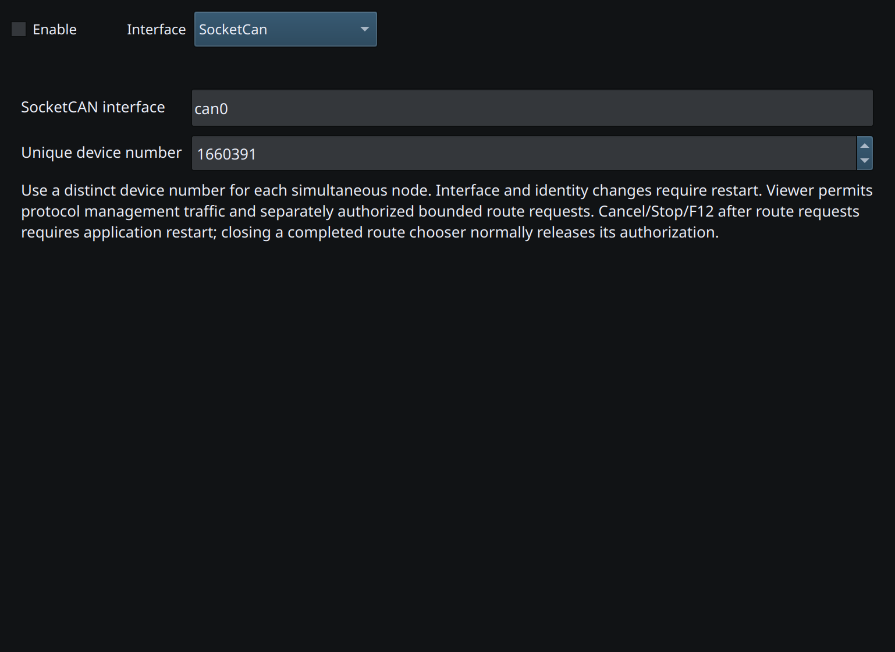

Native SocketCAN connects to a Linux CAN interface, including Raspberry Pi CAN hardware. Configure the operating system, controller and interface before using it in RayNmeaSimulator.
A ready software core does not prove address arbitration has settled, a receiving device is present or a particular PGN is displayed. Normal protocol servicing remains active in Viewer; this is not electrically silent listen-only capture.
After a transmission attempt or an authorized service request, Stop/F12 can close the native session for the remainder of the application run. Entering Viewer after transmission can also close it. If the status says a restart is required, restart RayNmeaSimulator before receiving or sending again.
Already queued OS frames cannot be recalled. Settings reload also stops application output. Preserve this safety policy when planning repeated tests.
For chartplotter retrieval, confirm that the target supports the requested route service and follow Selecting Chartplotter Routes.

Figure 67. Select SocketCan and enter the name of the configured Linux CAN interface. Click to enlarge.
NMEA2000 Overview · NMEA0183 Overview · Network NMEA2000 · CANable SLCAN · Waveshare USB-CAN-A · Actisense NGT-1 · Signal K · Device Discovery and Diagnostics · Connection Troubleshooting · Enable, Dispatch and Sending · Route Overview · Engineering Units